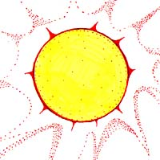

|
|
"Environmentally Sensitive Area". Please be careful where you walk and try not to disturb the natural environment. For additional information please contact Tourism Saskatchewan. | ||
| Cutknife Hill | |||
| GPS: | 52d 50.34m N | 108d 57.74m W | 1851 feet |
| Location: | This QTVR (at the bottom of the page) was shot on the top of Cutknife Hill next to Chief Poundmaker's grave, 7 kms north of Cutknife on #674 and 7 kms east on a twisting road through the Indian reservation. | ||
The museum features historical displays, artifacts and video presentations interpreting the history of Poundmaker Cree Nation. The 1840 battle between the Sarcee and the Cree, and the 1885 battle between Colonel Otter and Chief Poundmaker are highlighted. Chief Poundmaker's grave is onsite. If you are interested in following the story of the Northwest Rebellion, continue further north-west to the Lloydminster area, then to the historic sites associated with the third theatre of conflict where Cree, led by Chief Big Bear, clashed with Canadian militia and NWMP.
| |||
|
Violence erupted on April 2, 1885, when nine civilians in the tiny settlement of Frog Lake were killed by followers of Chief Big Bear. From there, the Cree attacked the fur trade post of Fort Pitt, taking civilian prisoners and forcing the small Mounted Police detachment at the fort to flee down the North Saskatchewan River to Battleford. The militia pursued the Cree and on May 28, fought an indecisive battle at Frenchman Butte. The final battle came on June 3, when NWMP scouts surprised the camp of Cree at a spot now known as Steele Narrows on Makwa Lake. You can visit these historic sites to get a more complete picture of what happened during this tragic time. But, like other parts of Canada's Old Northwest, the Rebellion is only one of many reasons for a visit. This is a picturesque part of Saskatchewan where rolling farm and ranchland meets northern forests and lakes. There are informative museums in St. Walburg and Frenchman Butte. This area was also home to one of the west's most prolific religious painters -- Count Berthold von Imhoff, a German-born nobleman who found that this corner of Saskatchewan was a perfect place to pursue his art. His paintings grace churches throughout the province, but one of the most ornate is within the Catholic church at Paradise Hill where the walls and ceiling are covered in his work. Chief Poundmaker Poundmaker was born near Battleford in 1842. He was named after his father, Seka-Kinyan, a medicine man of the Stoney Indian tribe from the Foothills of the Rocky Mountains. Seka-Kinyan was widely known as the maker of "pounds" or traps into which the buffalo were chased. Poundmaker's mother, Seka-Kinyan's fourth wife, was a Metis. After Seka-Kinyan had died, Poundmaker's mother decided to return home with her two young sons, Poundmaker and Yellowblanket. She longed to live once again with her Cree family on the prairielands east of Foothills. A few short years after she had returned home, she became ill and died. Her sons grew up as orphans with one of the Cree bands that roamed the Great Plains. With no parents to care for him, Poundmaker learned to fend for himself at an early age. Poundmaker learned to speak Cree, the language of his mother's people and the one most widely used of many Indian dialects and languages on the prairies.
| |||

As he grew older, Poundmaker became one of the best hunters in his band. His hunting taught him to be even-tempered and patient as well as fast and courageous. Although the men were expected to provide for their families, Poundmaker had no family to support, so he was always generous to share his meat. As he grew up, Poundmaker learned the customs and beliefs of the Cree people. Cree children had no formal education. They learned the rites and beliefs of their people by watching and listening to their elders. | |||
|
Poundmaker also became skillful in calling on the powers of nature to cure the sick. Although he was not officially recognized as a shaman, or medicine man, he did heal the sick. Poundmaker's ability to cure the sick through his special power of prayer and his knowledge and skill with plant medicines became well known among the Plain's Cree. When he was a little older and had acquired some status and prestige within the band, Poundmaker married one of the young women. A few short years later, he decided to take a second wife. It was practiced among the Cree that a man should take as many wives as he could afford to keep. Poundmaker's first wife wanted him to take her sister as his second wife so they could be together and share as they had done as children. Poundmaker agreed with the sisters. Poundmaker's reputation as a good hunter and healer grew. He was appointed headman of a band of Cree. These headmen acted as advisors to the chiefs. As headman, Poundmaker began to visit the Blackfoot tribe. Always independent and daring, he frequently wandered into Blackfoot territory. He soon became as familiar with this tribe as with the Cree. Here, he met Crowfoot. All the Indians living on the plains in the early 1870's knew of Crowfoot, the legendary chief of the Blackfoot tribe. He was an influential member of the Blackfoot Confederacy. Crowfoot began to hope for peace between the two tribes to strengthen them against the increasing numbers of settlers. Because of bad blood between the Blackfoot and the Cree tribes, many of Crowfoots' warriors would have readily taken Poundmaker's life, but the obviously warm friendship that quickly developed between Poundmaker and Crowfoot prevented this. Poundmaker visited Crowfoot several times and the two men learned more of each other and talked of their hope for peace between the two tribes. On one of his visits to Crowfoot's camp, the Blackfoot chief asked Poundmaker to become his adopted son. Poundmaker soon became aware of a new problem that was rising for both the Blackfoot and the Cree. The railway was being built and more settlers came to the West. More forts, more policemen, and more settlers wanting protection made it seem all the more possible that his people might soon find themselves in conflict with the newcomers. On May 2, Poundmaker led the battle at Cutknife Hill and on May 14, he was leading the band who seized the wagon train of supplies in the Eagles Hills. Poundmaker pleaded not guilty to the charge of "treason-felony". He was found guilty and sentenced to three years imprisonment. Poundmaker said "he'd rather be hung than in jail". Although Poundmaker was treated well in prison, he longed to return to his people. He hardly ate and developed a bad cough. After seven months at the Penitentiary, Poundmaker was released. Poundmaker wanted to see Crowfoot again and hoped that things were better with the Blackfoot.
| |||
 While Poundmaker was attending a Sundance, he died of a lung hemorrhage. He was buried at Blackfoot Crossing in Gleason, Alberta. It was impossible to carry his remains the great distance back to his Cree country. In 1967, Poundmaker's great grandson, Jim Poundmaker was a member of the party responsible in retrieving his remains, to be buried at Cutknife Hill, the place where he lived and fought for the rest of his people. | |||
|
Poundmaker's last words were: | |||
| GPS: 52d 50.34m N, 108d 57.74m W, 1851 feet 04 July 96, 1:00 pm, Fuji Velvia 50, F8 1/30s | |||